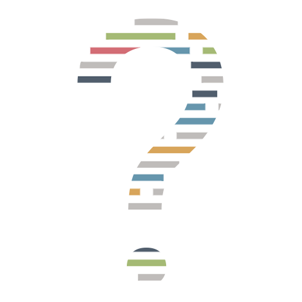
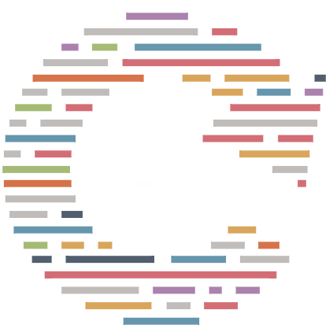
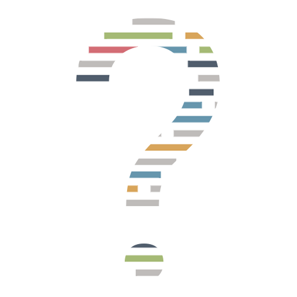
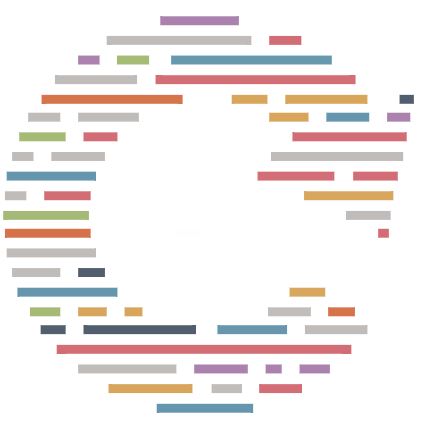

Fase 1 #BeCurious
Formål
#BeCurious handler om at opnå tilbundsgående indsigter i
din idé/udfordring. Det gælder om at få overdraget al den
viden, du sidder med. Vi er derfor meget nysgerrige i
denne fase. Vi søger at forstå dit behov, men også at
opnå indsigt i, hvorfra behovet udspringer. Vi dykker ned
i, hvordan du mener en app- eller webløsning vil
tilgodese dit behov. Vi afdækker, hvor langt du selv er i
processen. Og med udgangspunkt i vores ekspertviden
udfordrer vi dit ståsted.
Den første fase kan f.eks. indeholde:
// Forventningsafstemning
// Idé/udfordring og behovs-workshop
// Markedsanalyse
// Brugerinddragelse
Udbytte
Udbyttet af #BeCurious er en række kerne-indsigter, både
om din forretning og om løsningens behov, men også om
brugskonteksten og brugernes behov. Uden disse indsigter
bygger vi en løsning på ikke-validerede antagelser og vil
med stor sandsynlighed ende op med en løsning, der ikke
skaber den ønskede værdi. Kerne-indsigterne fra denne
fase føres med videre ind i den næste fase, hvor vi
starter omdannelsen til et egentligt koncept.
Fase 2 #BeCreative
Formål
Formålet med #BeCreative er at konceptualisere din
løsning. Det betyder i bund og grund at vi sætter rammen
for dit produkt og den oplevelse, der er forbundet med
det. Vi sikrer sammen med dig, at udformningen sker efter
hensigten, og vi danner grundlag for at du kan deltage i
processen. Vi omsætter indsigterne fra den første fase
til dét flow, som brugeren vil gennemgå fra start til
slut i løsningen. Og når alle parter har godkendt flowet,
begynder vi at give liv til din løsning ved at udbygge
flowet med mockups.
I denne fase udarbejdes:
// Flow
// Mockups
// Klikbar mockup-prototype
// Konceptdesign (2-3 stk. færdige skærme, som afspejler
det endelige design)
Udbytte
Ved udgangen af #BeCreative står vi med en færdig skitse
af din løsning. Skitsen gør det muligt for dig tidligt i
forløbet at se og gennemgå din løsning og komme med
inputs. Det færdige koncept tager vi med videre til næste
fase, hvor de tekniske aspekter kortlægges.
Fase 3 #BeTechnical
Formål
Formålet med #BeTechnical er at sikre korrekt kortlægning
af alle afhængigheder og touch points for din løsning. De
fleste afhængigheder er af teknisk karakter, som f.eks.
med tredjeparts-integrationer, men der findes også
afhængigheder for stakeholders, som er vigtige at
afdække. Med udgangspunkt i vores ekspertise og erfaring
udarbejder vi en risikovurdering, og efterfølgende
handleplaner for at sikre imødekommelsen af eventuelle
risici. Vi ved, hvor usikkerhederne typisk opstår, og
hvordan vi skal komme dem til livs, men de er vigtige at
afdække fra start, så udviklingsprocessen kan forblive
smidig.
Denne fase afdækker:
// Stakeholders
// Tekniske afhængigheder
// Teknisk risikovurdering
// GDPR-risikovurdering
Udbytte
Når vi er nået igennem #BeTechnical, står vi med et
overblik over alle de faktorer, der kan påvirke
løsningen, og vi er nu klar til at udarbejde en
kravspecifikation for din løsning.
Fase 4 #BeSpecific
Formål
Formålet med #BeSpecific er at sammenfatte det
forudgående arbejde i en kravspecifikation.
Kravspecifikationen sikrer at udviklerne kan give et
realistisk bud på, hvor lang tid hver enkelt del i
løsningen tager at udvikle. Herfra kan vi estimere det
overordnede tidsforbrug.
Denne fase indeholder:
// Kravspecifikation for den samlede løsning
Udbytte
#BeSpecific munder ud i en detaljeret kravspecifikation.
En kravspecifikation er en specifik beskrivelse af den
samlede løsning, så udvikleren forstår nøjagtig, hvad det
er for en løsning, der skal bygges. Efter denne fase er
vi klar til at omd anne det samlede afklarings-arbejde til
et færdigt overblik over din løsning.
Fase 5 #BeAwesome
Formål
Formålet med #BeAwesome er at sammenfatte al den
indsamlede viden i et samlet overblik. Du får en
velunderbygget pris og struktur for din løsning, som
understøtter det overordnede formål med afklaringsfasen,
at vi kan levere den ønskede løsning til aftalt tid og
pris, så du ved præcis, hvad du kan forvente, når vi
starter udviklingsprocessen.
Når vi estimerer en løsning, afdækker vi
projektøkonomien, herunder design, udvikling, tid til
projektledelse, test og justeringer, men vi afdækker også
service og drift. Det er nemlig med apps som det er med
huse - de skal vedligeholdes, ellers går de i forfald.
Denne fase indeholder:
// Projektplan
// Estimater
// Projektøkonomi
Udbytte
#BeAwesome er sidste fase i afklaringsforløbet. Alt
indhold samles i et endeligt overblik, som du modtager
sammen med alle indsigter, vurderinger og beskrivelser
samt den endelige pris for udviklingen af din løsning.
Værsgo’.


 


